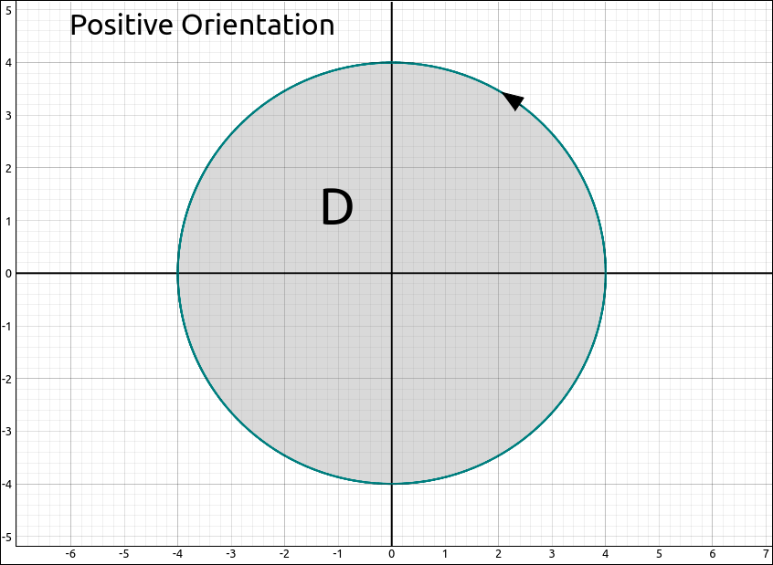
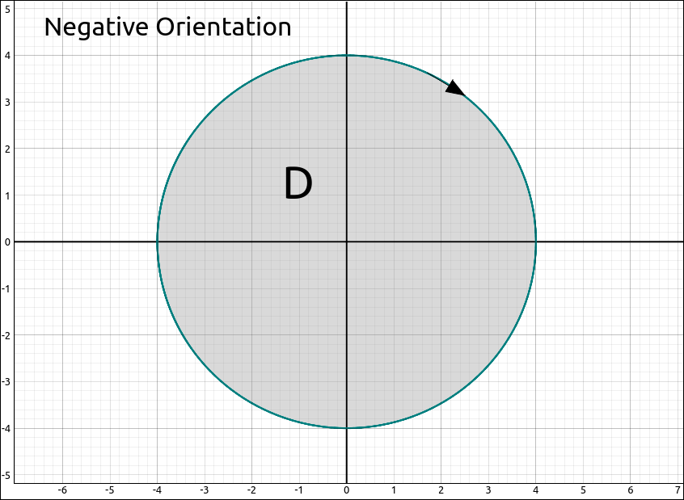
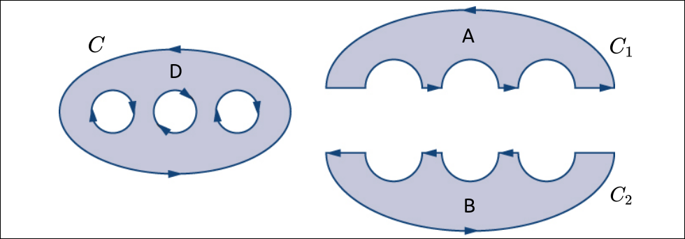
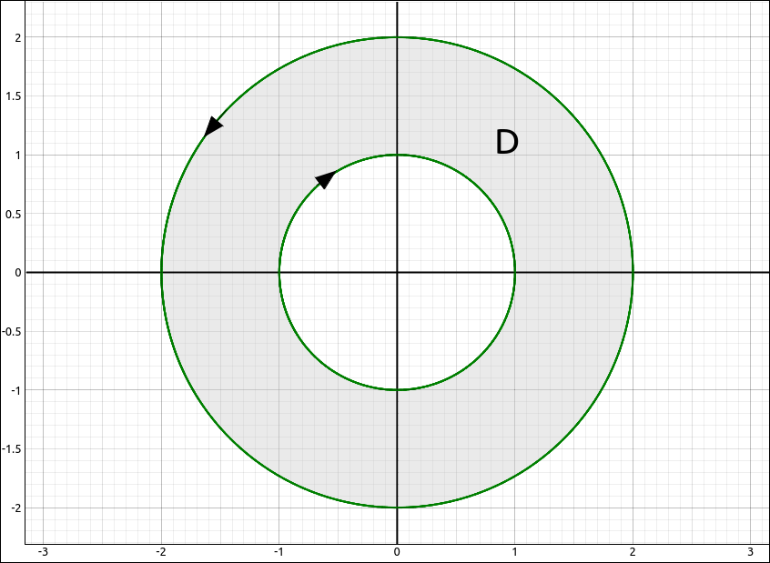

Green’s Theorem#
Green’s Theorem gives the relationship between a line integral around a simple closed curve and a double integral over the plane region bounded by the curve.
Orientation#
Definition: Positive and Negative Orientation
Say we have a simple closed curve C that encloses a region D. We say that C has positive orientation if the traversal around C is counterclockwise. That is, if we walk around the curve C the region D is always on our left.

Positive Orientation#
Similarly, C has a negative orientation if the traversal around C is clockwise. That is, if we walk around the curve C the region D is always on our right.

Negative Orientation#
Green’s Theorem#
Theorem: Green’s Theorem
If C is a positively oriented, piecewise-smooth, simple closed curve and D is the region bounded by the curve C. If \(\mathbf{F} = (P, Q)\) where P and Q have continuous partial derivatives on an open region containing D, then
Note
The notation,
is the same as
The circle on the integral sign is sometimes used to represent an integral on a positively oriented closed curve C.
Example: Green’s Theorem#
In this example we are going to calculate the line integral,
where C is the positively oriented rectangle with vertices \((1, 1)\), \((5, 1)\), \((5, 3)\), \((1, 3)\).
So the integral is,
CLAE#
We could have used the CAS to help with the derivatives but they are easy to do in this example. For the final integral, also easy to do, input,
-3*x^2*y^2 - exp(y)*sin(x)
Then select Calculus > Multiple Integrals > Double Integral, first variable is x with bounds 1 and 5, the second variable is y with bounds 1 and 3, the result is,
Note how much work this has saved. If we had done the line integral we would have had to break the integral up into four integrals, one for each line segment, parameterize each line segment, and do the four integrals. Green’s theorem reduced all of this to a simple double integral.
Green’s Theorem on General Regions#
Green’s Theorem, as stated, does not apply to regions like region D in the image below. It can easily be extended to regions of this type.

General Region#
If we cut the region through the internal holes maintaining a positive orientation note that the line integrals in the cuts will cancel out and
So, Green’s theorem also holds for regions that have a finite number of holes in them as long as the holes are positively oriented, that is, the region is on the left.
Example: Green’s Theorem on a General Region#
In this exercise we will be finding the integral,
where C is the positively oriented curve enclosing the region D in the image below.

Region D#
So the integral is,
Once again this saved us a significant amount of work and some nasty integrals.